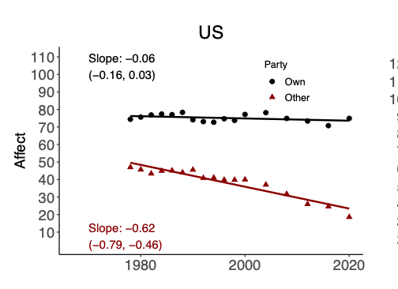
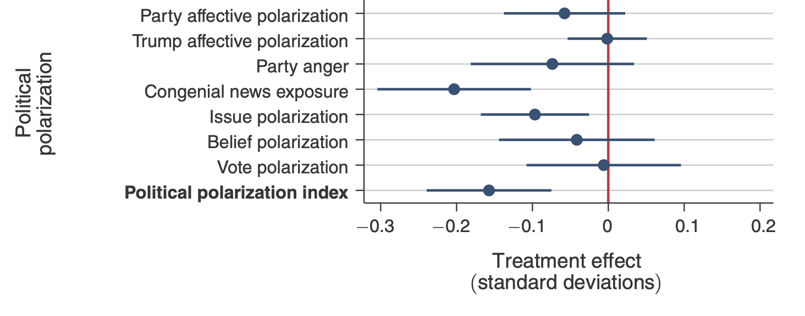

TL;DR: The experiments run by Meta during the 2020 elections were not big enough to test the theory that social media has made a substantial contribution to polarization in the US. Nevertheless there are other reasons to doubt it.
Summary
 Thanks to Dean Eckles, Solomon Messing, Jeff Allen, & Brandon Silverman for discussion which led to this post. I put together the spreadsheet summary of results with Dean and Solomon. See also a post by Dean.
Thanks to Dean Eckles, Solomon Messing, Jeff Allen, & Brandon Silverman for discussion which led to this post. I put together the spreadsheet summary of results with Dean and Solomon. See also a post by Dean.
1 Allcott et al. (2019), see below for discussion of whether these standard deviations are comparable.
Three new experiments show that changing Facebook’s feed ranking algorithm for 1.5 months has an effect on affective polarization of less than 0.03 standard deviations. This is small compared to a growth of 1.1 standard deviations in nationwide affective polarization over the last 40 years.1
Small effects in these experiments are consistent with large effects in aggregate. Guess et al. (2023b) says:
“these findings suggest that social media algorithms may not be the root cause of phenomena such as increasing political polarization.”
However they aggregate contribution of social media to polarization will differ from these experimental estimates in a number of ways: depth, breadth, duration, timing, category, and population. My rough attempts to account for these considerations make me think the aggregate effect is likely 10 or 20 times larger than the effects that would be measured in these experiments, and so small effects in these experiments are consistent with large effects on aggregate.
Put simply: these experiments measure the effect of reducing exposure of an individual user (not their friends and family) to political content on Facebook by 15% for 1.5 months, and occurred in a period after Facebook had already sharply reduced the amount of partisan content circulating. Thus we should expect them to measure only a small fraction of the cumulative impact of social media, and in fact these results are consistent with social media being entirely responsible for the growth of polarization in the US.
Nevertheless other evidence implies that social media has probably not made a huge contribution to US polarization. If we wish to evaluate the balance of evidence relating social media to polarization there are many other sources which are probably more informative than these experiments. I give a rough sketch below and it seems to me social media probably does not account for a majority share, mainly because (1) polarization had been growing for 20 years prior to social media’s introduction, and much of the growth since 2014 was in people without internet access; (2) a lot of partisan discourse continues to spread outside of social media, e.g. through cable TV and talk radio; (3) other countries do not show a similar increase in affective polarization.
Discussion of these results has been distressingly non-quantitative. The majority of discussion of these results (in papers, editorials, on Twitter) has been about whether these changes “have an effect” or “do not have an effect.” Interpreted sympathetically these statements are compressed ways of saying “an effect larger than 0.03 standard deviations.” However I think taking this shortcut so consistently has led to far too little time thinking about what we have learned from these experiments that we didn’t already know, and what is the balance of evidence regarding the effects of social media. I give a lot of examples below.
The Experiments
Last week’s papers reported the results of three experiments on Facebook’s News Feed. The experiments (Guess et al. (2023b), Guess et al. (2023a), Nyhan et al. (2023)) were run between September and December 2020, and half-way through participants were asked about their feelings towards members of their own party and the opposing party, e.g. “how warm do you feel about Republicans on a scale of 0-100?”2 The answers were aggregated to make an index of “affective polarization”: \[\xymatrix@R=0em@C=6em{ *+[F:<5pt>]\txt{rank items on News\\Feed chronologically} \ar[dr] & \\ *+[F:<5pt>]\txt{remove reshares\\on News Feed} \ar[r] & *+[F:<5pt>]\txt{affective\\polarization\\survey}\\ *+[F:<5pt>]\txt{downrank likeminded\\items on News Feed} \ar[ur] } \]
2 Although the treatments ran for 3 months (24 Sep–23 Dec 2020), the survey responses were collected during the experiment and the average survey measure was measured after around 1.5 months of treatment: see Figure S2 in the Supplementary Appendix.
All three experiments found effects on polarization of less than 0.03 standard deviations (SDs). The 95% confidence intervals on affective polarization are approximately \(\pm\) 0.03 SDs, and the effect-sizes are all smaller than that (i.e. they do not estimate a significant effect). Dean Eckles, Solomon Messing, and myself put together a spreadsheet summary of the results from all the experiments reported so far, along with other results from the literature on political effects of media.
They also measured effects on a number of other off-platform outcomes: removing reshares did lower news knowledge by 0.07 standard deviations, but all other outcomes (factual discernment, issue polarization, perceived legitimacy, self-reported turnout) were not significant, and had similar-sized confidence intervals.
Other Evidence on Media and Polarization
Here is a rough sketch of the evidence of related to affective polarization. I do not consider myself an expert on this literature and I would love corrections or additions. On balance this evidence seems to imply that social media hasn’t been the primary contributor to US affective polarization, but I think a thorough analysis of this evidence would be really valuable.
- News Sources
- From Pew data I would guess social media is around 25% of all exposure to political news, probably a higher share of exposure to partisan political news. Cable TV and political talk radio probably account for similar shares of overall exposure to partisan media. This seems the strongest evidence that social media is not the primary driver of affective polarization.
- Professional Opinion
- The political science literature talks about “the paradox of minimal effects” and the economics-of-media literature generally seems to have a consensus that most persuasive effects of media are small. However this might just apply to marginal effects.
- Other Experiments
- Allcott et al. (2020) is often interpreted as finding an effect on affective polarization but it does not (see below). Broockman and Kalla (2022) finds a null effect. I don’t know of other good experiments on affective polarization.
- National Trends
- In the US affective polarization steadily grew 1978-2020, for a total of 1.1 SD over 40 years. Other countries do not show a consistent trend, and there is no clear connection with internet access or online news consumption.
- Demographic Trends
- Over 1996-2012 affective polarization grew the most in groups who have not increased their internet access. I’m not aware of more recent data.
- Natural Experiments
- Some papers find that roll-out of mobile internet is associated with increased support for populist parties, to a degree that mobile internet could account for perhaps 1/3 of their total support
Discussion
Trends in affective polarization. Boxell et al. (2022) document affective polarization across a dozen countries, 1978-2020:

In the US affective polarization index increased from around 25 to 50, “an increase of 1.08 standard deviations as measured in the 1978 distribution.” (I’m not sure if the SD increased).
Across the world there’s no clear trend: some countries increased, other countries decreased. This weakens the simple argument that polarization has increased at the same time as social media use.
In the US the trend seems to be almost entirely due to increasing negative feelings about the opposing party:

The US timeseries can be seen online from the ANES.
Growth in populist support. Across the world there has been a substantial growth in populist governments. Guriev et al. (2021) and Manacorda et al. (2023) both argue from natural variation in mobile internet expansion that the internet has caused perhaps 1/3 to 1/2 of the increase in populist support in Europe.
Observational data finds that much of the growth in polarization in the US was among people who were not online. Boxell et al. (2017) say
“the growth in polarization in recent years [1996-2012] is largest for the demographic groups least likely to use the internet and social media”
Content on Meta platforms. Guess et al. (2023b) has data from the control group in their 2020 experiments:
| Share of Impressions | ||
|---|---|---|
| Political content | 14% | 5% |
| Political news content | 6% | - |
| Content from untrustworthy sources | 3% | 1% |
| Uncivil content | 3% | 2% |
Pew 2022 has data on where people get their news from:
| pct adults regularly get news from | |
|---|---|
| television | 65% |
| news websites | 63% |
| search | 60% |
| social media | 50% |
| radio | 47% |
| 33% | |
| podcasts | 23% |
Radio show popularity. Around half of the top 20 most-listened radio shows in the US are conservative talk, with around 90M weekly listeners (this is double-counting overlapping users). Data from 2021.
Television. Fox News is Cable TV’s most-watched network with around 5M regular viewers. (source from 2016).
Time spent on social media. Statista: Average time-spent 150 minutes/day/person on social networks
The academic literature has identified other possible causes of polarization. Some potential causes: southern realignment, 1968 changes to the primary system, the Obama presidency, the tea party movement (though each of these could be in part proximal causes). Martin & Yurcoglu (2017) argue that a large part of recent growth is due to cable news: > “the cable news channels can explain an increase in political polarization of similar size to that observed in the US population over [2000-2008]. … In absolute terms, however, this increase is fairly small.”
See also Haidt and Bail’s long document Social Media and Political Dysfunction: A Collaborative Review
Does Allcott et al. (2020) find that Facebook use increases polarization? This paper reports on an experiment paying people to stop using Facebook for a month. They find an effect of -0.16 SDs (\(\pm\) 0.08) on a measure they describe as “political polarization,” however there are some subtleties:

Unlike the questions used in typical population surveys the questions were explicitly about their feelings during the period of the experiment, e.g. “Thinking back over the last 4 weeks, how warm or cold did you feel towards the parties and the president on the feeling thermometer?”
Polarization is measured by a composite of different measures. By far the largest effect was on the “congenial news exposure” question: “over the last 4 weeks how often did you see news that made you better understand the point of view of the Democrat (Republican) party?” The score was the difference between the answer for their own party vs the other-side party. It seems to me that it’s not surprising that deactivating Facebook would affect one’s exposure to such news, but that this wouldn’t normally be called a measure of “polarization” in the literature. The paper mentions in a footnote that “the effect on the political polarization index is robust to excluding each of the seven individual component variables,” but it turns out that removing “congenial news exposure” halves the effect-size and shifts the p-value from 0.00 to 0.09 (i.e. from very significant to non-significant). I’m not sure I would describe this as evidence of robustness.
The paper finds no significant effect on their two “affective polarization” measures (-0.08 \(\pm\) 0.08 SD, and 0 \(\pm\) 0.04 SD), however the Meta2020 papers which cite Allcott et al. (2020) seem to treat it as finding that Facebook has a positive effect on “polarization” without noting that it has a null effect on affective polarization.
Literature Review
Zhuravskaya et al. (2020) review literature on the political effects of the internet and social media. Regarding politics they say:
“The spread of the internet and social media has contributed, at least in part, to the electoral success of populists in Europe and to reduced political support for the ruling parties in immature democracies and semiautocratic regimes. There is also evidence that social media can be used to mobilize voters.”
Regarding polarization they say:
“the available evidence so far is not conclusive about whether social media increases political polarization.”
Guriev et al. (2021) uses 3G roll-out worldwide 2008 to 2017, they find a 40pp increase in mobile internet use causes:
“reduced the confidence in the national government of the region’s population by 2.5 percentage points (from the mean level of 51%), and increased the perception that the government is corrupt by 1.4 percentage points (from the mean of 77%).
They estimate within Europe that a 50pp increase in 3G access caused a 5% drop in support for incumbents, a 5% increase in support for right-populist parties, and a 4% increase for left-populist parties.
Melnikov (2021) finds that 3G roll-out in the US (1) increased the rates of self-identified ; (2) increased polarization in voting “the vote share of Republican candidates increases by 4.5 percentage points in Republican-leaning counties and decreases by 2.6 percentage points in Democratic-leaning counties.” The paper says “3G network coverage can account for 11.3% of the increase in polarization in political views, 37.7% of the increase in polarization in voting behavior, and, on average, 34.8% of the increase in polarization in policy preferences.” The paper calculates a “persuasion rate” of around 10, meaning I think that around 10% of people who are exposed to 3G internet are persuaded.
Manacorda et al. (2023) study roll-out of mobile internet across Europe 2007-2017, they estimate: > “between one third and one half of the remarkable success of communitarian [populist] parties, which roughly doubled their support over the period, can be ascribed to enhanced access to mobile Internet technology.”
Quantitative vs Qualitative Description of Results
Throughout these papers and in the public discussion the findings have been described in qualitative terms: i.e. either as “positive,” “negative,” or “neutral.” Implicitly these terms are referring to whether the results are statistically-significant (p<0.05), which depends on whether the effect-size is bigger than the confidence interval. These statements only make sense given some implicit understanding of how broad the confidence intervals are, yet I do not think that implicit understanding exists: I’m fairly confident that most people reading these statements (and many people making them) do not know quantitatively what the thresholds are.11
11 It’s worth stating that all of these treaments will have some non-zero effect, so it’s never literally correct to say “this treatement has no effect on polarization,” it can only be understood as a roundabout way of saying “this treatment has a small effect” for some definition of “small”.
Titles and abstracts used qualitative descriptions. The titles and abstracts all used qualitative language, e.g. “did not reduce” or “did not significantly affect” or “had no measurable effects.” None of the abstracts of the papers gave information on the size of the effects that were ruled out.
Hypotheses used qualitative descriptions. The pre-analysis plans contained a series of hypotheses, e.g.:
H1: Decreased exposure to content shared by like-minded friends, Pages, and groups decreases affective polarization.
H1: Reverse chronological feed will reduce polarization and negative perceptions of out-groups.
The terms “decrease” and “reduce” are presumably implicitly referring to the width of the confidence intervals, but I could find no discussion of how much .
Public discussion used qualitative descriptions. Almost all discussion in editorials and on Twitter described the results in qualitative terms, whether there was an effect or not, not in quantitative terms.
Elicitation of priors used qualitative descriptions. I was at an SSRC conference a few days before the results were released and there was a poll taken to predict the results. For “polarization” the options were (as I recall) “no effect”, “small increase”, “substantial increase”, etc., where I believe “increase” was intended to be interpreted as “statistically significant increase.” However as I recall we were not told the width of the confidence intervals when asked to make predictions. I think this is a bad way of eliciting priors: whether something is significant depends on the width of the confidence intervals as much as the effect-size. Thus an equivalent way of phrasing the question would be “do you think these experiments are sufficiently powered?”12
Power calculations used qualitative descriptions.
Guess et al. (2023b) said that there was sufficient power to detect “small” effects, without explaining why they regarded 0.03 SD as small.13 The supplement and pre-analysis plan do not mention “power” or seem to discuss the quantitative interpretation of these effect-sizes.
They do cite a previous paper:
“In all cases, we could rule out effect sizes smaller than those found in previous research [citation to Allcott 2020]
However I beleive this is a misinterpretation: Allcott et al. (2020) does test for affective polarization but they find a non-significant effect. As discussed above that paper reports a significant effect for “polarization” but the significance is due solely to the response to asking people about “congenial news exposure” over the last 4 weeks, which I think is quite different from polarization.
The Supplementary Appendix to Guess et al. (2023b) says the sample size was chosen to detect an effect size of 1.5 percentage points in vote choice (p. S-139), however it is not clear why this effect size was chosen.
Guess et al. (2023a) says explicitly that they (or someone) expected a significant effect:
“Contrary to expectations, the treatment does not significantly affect political polarization or any measure of individual-level political attitudes.”
However I did not find a discussion of why they expected an effect of that size.
12 A similar phenomenon occurs in forecasting: if someone asks you a question for which you miss crucial context like “what is the chance of the Grockles winning the Kaplooey cup?” then you can give a good answer but it will be based on your judgment of the person asking the question, not your judgment about the substance of the question itself.
13 “The large samples … allowed for adequate statistical power to detect small effects (for example, for affective polarization, we were powered to detect population average treatment effects with Cohen’s d = 0.032 or larger for both Facebook and Instagram).”
Good quantitative work. Some of the authors of these 2020 papers have written other papers which I think use a much more useful approach: they use observational data, are quite focussed on quantitative outcomes, and they perform back-of-the-envelope calculations to reconcile evidence from different sources, e.g. Boxell et al. (2022), Boxell et al. (2017), Allcott and Gentzkow (2017).